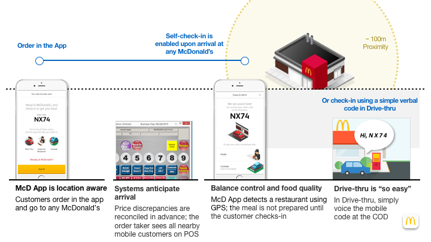
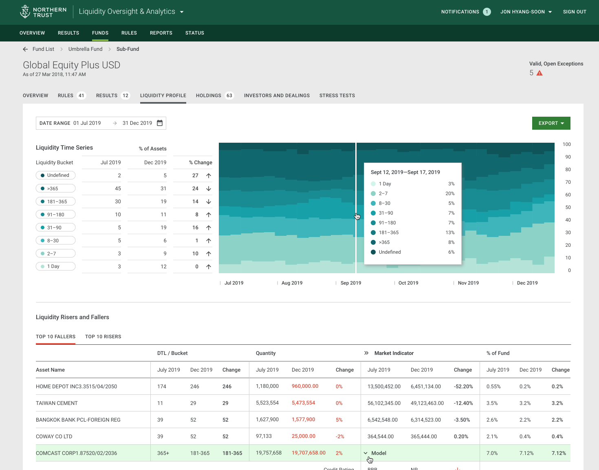
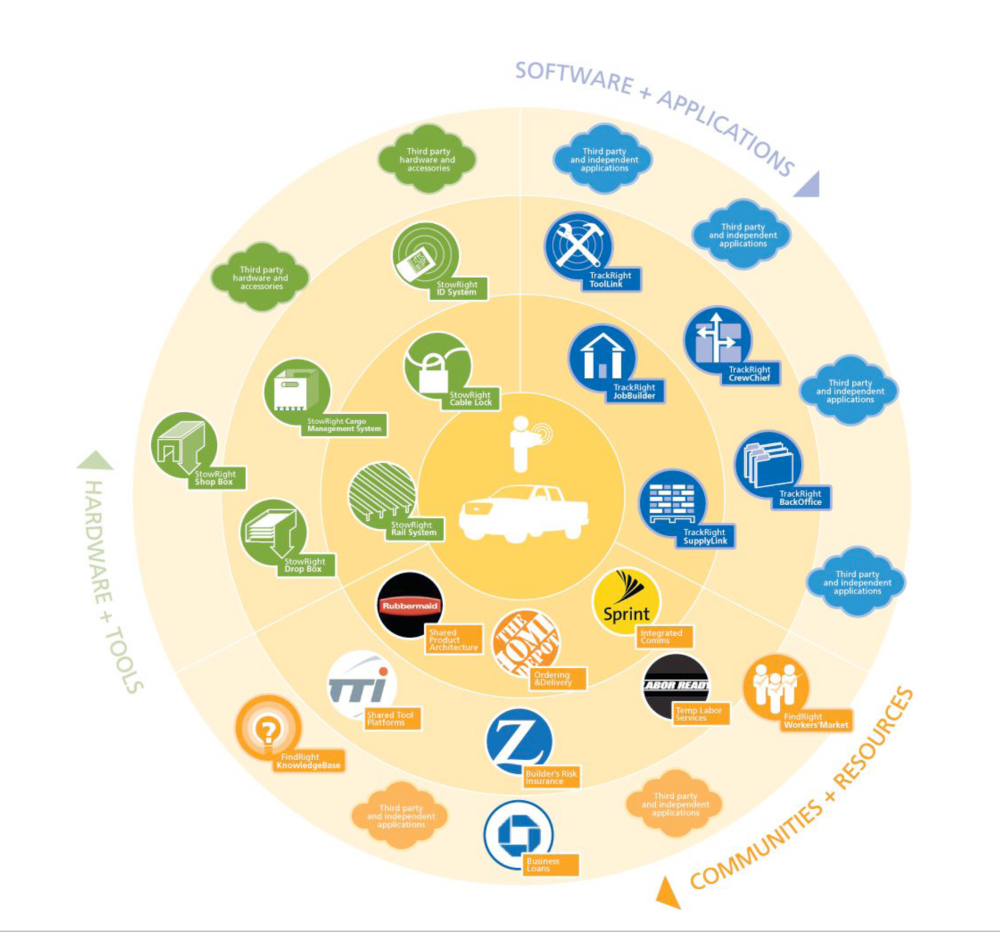

Design & Innovation Leader
Building teams and experiences that start with people and end in results.
I lead design and innovation teams through complex challenges, from understanding opportunities through a human-centered lens to delivering digital products and services at scale.
Selected work
03 projects
Mobile Ordering & Check-in Platform
Order in the app and pick up at any McDonald's, at any fulfillment point, simply by pushing a button or saying a code. A GPS-based check-in platform designed to scale across 36,000 restaurants.
View case study
Client Experiences for Asset Management
A selection of experiences created for Northern Trust that support client experiences, from liquidity oversight and stress testing to portfolio views.
View case study
FordWorks
An integrated system of software, hardware and community resources that helps contractors and tradespeople maximize uptime and run a more successful business, from the office, the truck and the job site.
View case studyAI & Design
Scaling AI across design teams.
I'm bringing AI into how my teams work every day, from research synthesis and concepting to prototyping, design-to-code and DesignOps.
We start small with pilots and champions, turn what works into shared playbooks and training, and scale it in partnership with Product and Technology, so AI makes us faster without losing the judgment and care our clients count on.
Read my approachAbout
Human-centered, results-driven.
Design & Innovation leader with experience building teams, tackling complex challenges, understanding opportunities through a human-centered lens and delivering experiences that drive results.
Experience
-
ThriventVice President, Digital Design2026 – Present
Lead the strategy and organization shaping intuitive, connected digital experiences for clients and financial professionals. Partner across Product, Technology and the business to translate client needs and enterprise priorities into experiences that drive meaningful outcomes.
Focused on building a strong design culture, developing high-performing teams, and bringing product design, research and design operations together to influence strategy, accelerate decision-making and create more unified experiences across Thrivent.
Director of Design, Client Experience2023 – 2026Led enterprise design strategy across Digital Client Experience, Money Canvas and Thrivent Bank, spanning prospect growth, client engagement and financial wellbeing. Built and scaled multi-disciplinary design teams and operating models across a complex, matrixed organization, partnering with senior business leaders to align design investment with enterprise priorities and measurable client and business outcomes.
-
Northern TrustChicago, ILDesign Director, Design Innovation and DesignOps2021 – 2023
Responsible for client experiences within asset management, security & authentication and experience innovation. Led a team of designers, communication and product management professionals to define new and enhanced experiences.
Portfolio Lead, Innovation and Design2018 – 2021Managed a team of designers, writers and researchers to envision future digital and service experiences for the bank's clients and employees.
-
McDonald'sOak Brook, ILHead of Digital Experience and Innovation2017 – 2018
Led the teams developing future digital concepts and delivering UX/UI for all digital products: kiosk, web and mobile. Managed experiences driving $32 million in sales, growing 4–5% annually.
Director, Experience Innovation2014 – 2016Led the team defining future digital restaurant experiences for customers and employees. Managed a platform team of 13 and a $3.5 million budget.
Manager, Customer Experience Design2011 – 2014Created the digital innovation agenda and led development and launch of the mobile ordering solution, built to scale across 36,000 restaurants.
-
IA CollaborativeChicago, ILDesign Strategist2010 – 2011
Led client teams of designers and researchers to find innovative solutions through user insight, creative strategy and design.
-
Doblin, Monitor GroupChicago, ILManager2007 – 2010
Framed innovation agendas, led teams to identify new businesses and customer needs, and managed multi-million dollar engagements.
Project Consultant2006 – 2007Developed new business concepts for furniture, automotive and home fitness clients; facilitated 50+ person workshops.
-
IIT Institute of DesignChicago, ILAdjunct Professor2007 – 2009
Taught Introduction to Design, covering design research and innovation planning.
-
Catapult ThinkingBoston, MADesign Researcher2003 – 2004Graphic Designer2000 – 2003
-
EducationMaster of Design, Design PlanningIIT Institute of Design · 2006B.S. Design, Graphic DesignUniversity of Cincinnati, DAAP · 2000